CS254 Visual Programming · Lecture 7 + Lab 6
Graphics
Drawing on a JPanel with paintComponent: the Graphics methods, Graphics2D shapes, colours, gradients, textures, strokes, transformations and a Timer animation. Every slide of Lecture 7 – Graphics (33 slides) in order, then Lab 6 (Mouse Events & Graphics) with a playable Tic-Tac-Toe and its full solution. The drawing playground runs real g.drawLine(...)-style code, so you can edit the slide examples and see the result.
Slides 1–4
Drawing on a JPanel
Graphics 1
Display Drawing 2
- To display graphics we use panels as canvases
- There are cases when you need a custom component.
- Usually this is when you want to paint custom 2-D graphics.
- We often call a custom painted component a canvas.
- To do so, write a class that extends
JPanel.- Override method
paintComponentto tell Java how to draw it:
public void paintComponent(Graphics g)
- Some programmers extend
JComponent.
- Override method
A drawing canvas 3
- Coordinate system: (0, 0) at top-left, x-axis increases rightward, y-axis downward.
- Component's surface is transparent unless drawn on.
JComponent'spaintComponentdoes important things that we don't want to lose. (e.g. paints the component's background)- So call the method
super.paintComponentfirst thing.
- So call the method
public void paintComponent(Graphics g) {
super.paintComponent(g);
...
}A drawing canvas 4
- It is important never to call paintComponent directly in order to initiate a redrawing.
- To do that, one calls the repaint()-method of the panel. This is done.
- to avoid conflicts between redrawing and other operations of the runtime system.
- A call to repaint does not immediately repaint a component.
- it tells the runtime system that one would like the component to be redrawn.
- The system calls paintComponent after other pending actions have been completed
Slides 5–10
Graphics methods and first examples
Graphics methods 5
| Method | What it draws |
|---|---|
drawLine(int xstart, int ystart, int xend, int yend) | draws a line segment between the points with coordinates (xstart, ystart) and (xend, yend). |
drawRect(int xleft, int ytop, int width, int height) | draws the contour of an axes-aligned rectangle. The upper left corner of the rectangle is at (xleft, ytop). It is width pixels wide and height pixels tall |
drawOval(int xleft, int ytop, int width, int height) | draws the contour of an ellipse. The axes of the ellipse are parallel to the coordinate axes. The upper left corner of the bounding rectangle of the ellipse is at (xleft, ytop) and is called the reference point. The horizontal axis of the ellipse has length width, the vertical one height. |
drawString(String text, int xleft, int ybottom) | draws the string text. The lower left corner of the bounding rectangle of the text is at (xleft, ybottom). This is the reference point. |
fillRect(int xleft, int ytop, int width, int height) | draws a filled rectangle using the current colour, otherwise like drawRect. |
fillOval(int xleft, int ytop, int width, int height) | draws a filled ellipse using the current colour, otherwise like drawOval |
setColor(Color col) | sets the colour of the drawing to col. This colour is used until the setColor command is used again. |
Example 6–7
import java.awt.*;
import javax.swing.JPanel;
public class SimpleGraphicsPanel extends JPanel
{
public SimpleGraphicsPanel()
{
this.setBackground(Color.white);
this.setPreferredSize(new Dimension(300,300));
}
public void paintComponent(Graphics g)
{
super.paintComponent(g);
g.setColor(Color.black);
g.drawLine(10,10,100,100);
g.setColor(Color.red);
g.drawLine(10,100,100,10);
g.setColor(Color.green);
g.drawOval(120,60,70,40);
g.setColor(Color.yellow);
g.fillOval(230,150,30,30);
g.setColor(Color.red);
g.fillOval(245,150,30,30);
g.setColor(Color.black);
g.fillOval(238,160,30,30);
g.setColor(Color.cyan);
g.fillOval(10,120,100,60);
g.setColor(this.getBackground());
g.fillOval(50,140,100,60);
g.setColor(Color.blue);
g.drawString("Swing is nice.",100,200);
}
}import java.awt.BorderLayout;
public class SimpleGraphicsFrame extends SimpleFrame
{
public SimpleGraphicsFrame()
{
this.setTitle("Simple Graphics");
SimpleGraphicsPanel SGP = new SimpleGraphicsPanel();
this.getContentPane().add(SGP,BorderLayout.CENTER);
pack();
}
}public class SimpleGraphicsDriver
{
public SimpleGraphicsDriver()
{
SimpleGraphicsFrame SGF = new SimpleGraphicsFrame();
SGF.showIt();
}
public static void main(String[] args)
{
SimpleGraphicsDriver sgt = new SimpleGraphicsDriver();
}
}Finding the screen parameters 8
Toolkit tk = Toolkit.getDefaultToolkit(); Dimension screenDim = tk.getScreenSize(); int screenHeight = screenDim.height; int screenWidth = screenDim.width; int pixPerInch = tk.getScreenResolution();
Example 2 9–10
import java.awt.Color;
import java.awt.Graphics;
import javax.swing.JPanel;
public class ResizePanel extends JPanel{
public ResizePanel(){
this.setBackground(Color.yellow);
}
public void paintComponent(Graphics g)
{
super.paintComponent(g);
// get the current dimensions of the panel
int currentWidth = this.getWidth();
int currentHeight = this.getHeight();
// take a third of the current dimensions
int wThird = currentWidth/3;
int hThird = currentHeight/3;
//set color to black
g.setColor(Color.black);
// and draw the rectangle
g.fillRect(wThird,hThird,wThird,hThird);
}
}import SimpleFrame.SimpleFrame;
public class ResizeFrame extends SimpleFrame{
public ResizeFrame(){
ResizePanel rp = new ResizePanel();
this.setSize(500,300);
this.getContentPane().add(rp);
}
}
public class ResizeDriver
{
public static void main(String[] args){
ResizeFrame rf = new ResizeFrame();
rf.showIt("ResizeFrame");
}
}Try it: resize the panel
AddedBecause the rectangle is computed from getWidth() and getHeight() every time paintComponent runs, it stays in the middle third however the window is resized.
Added · interactive
Drawing playground
Write the body of paintComponent and press Run (or edit and wait). It understands the Graphics and Graphics2D calls from this lecture: setColor, drawLine, drawRect, fillRect, drawOval, fillOval, drawArc, fillArc, drawString, setFont, drawPolygon/fillPolygon with int[] arrays, and on g2: draw/fill with Rectangle2D, Ellipse2D, Line2D, RoundRectangle2D, setPaint, GradientPaint, setStroke(new BasicStroke(...)), translate, rotate, scale. Hover the canvas to read coordinates.
Slides 11–15
Graphics2D and shapes
Graphics2D 11
- The
Graphicsobjectgpassed topaintComponentis a "graphical context" object to draw on the component.- The actual object passed in is a
Graphics2D(can cast).
Graphics2D g2 = (Graphics2D) g;
- The actual object passed in is a
Graphics2Dis a subclass ofGraphicsthat adds new features, new shapes, matrix transformations, color gradients, etc.
Graphics2D methods 12
| method name | description |
|---|---|
draw(Shape) | draws the outline of a given shape object (replaces drawRect, etc.) |
fill(Shape) | draws the outline and interior of a given shape object |
getPaint(), setPaint(Paint) | returns or sets the current paint used for drawing (Color is one kind of Paint, but there are others) |
getStroke(), setStroke(Stroke) | returns or sets the current line stroke style used for drawing (can be thin/thick, solid/dashed/dotted, etc.) |
rotate(angle) | rotates any future drawn shapes by the given angle (radians) |
scale(sx, sy) | resizes any future drawn shapes by the given x/y factors |
translate(dx, dy) | moves any future drawn shapes by the given x/y amounts |
setRenderingHint(key, value) | sets "rendering hints" such as anti-aliasing and smoothing |
shear(shx, shy) | gives a slanted perspective to future drawn shapes |
transform(t) | adds a transformation that will be applied to all shapes |
Shapes (java.awt.geom) 13
Arc2D.Double(x, y, w, h, start, extent, type)
An arc, which is a portion of an ellipse.Ellipse2D.Double(x, y, w, h)Line2D.Double(x1, y1, x2, y2)Line2D.Double(p1, p2)
A line between two points.Rectangle2D.Double(x, y, w, h)RoundRectangle2D.Double(x, y, w, h, arcx, arcy)GeneralPath()
A customizable polygon.
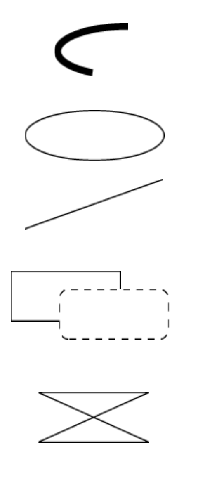
Methods of all shapes 14
| method name | description |
|---|---|
contains(x, y)contains(point)contains(rectangle) | whether the given point is inside the bounds of this shape |
getBounds() | a rectangle representing the bounding box around this shape |
getCenterX/Y()getMinX/Y()getMaxX/Y() | various corner or center coordinates within the shape |
intersects(x,y,w,h)intersects(rectangle) | whether this shape touches the given rectangular region |
Drawing with objects 15
public class MyCanvas extends JComponent {
public MyCanvas() {
this.setBackground(Color.WHITE);
}
public void paintComponent(Graphics g) {
super.paintComponent(g);
Graphics2D g2 = (Graphics2D) g;
Shape shape = new Ellipse2D.Double(10, 10, 20, 50);
g2.setPaint(Color.BLUE);
g2.fill(shape);
}
}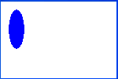
Slides 16–19
Colours, paints, strokes, repaint
Colors and paints 16
Color(a simple single-colored paint)public Color(int r, int g, int b)public Color(int r, int g, int b, int alpha)- a partially-transparent color (range 0-255, 0=transparent)
GradientPaint(a smooth transition between 2 colors)public GradientPaint(float x1, float y1, Color color1, float x2, float y2, Color color2)
java.awt.TexturePaint
(use an image as a "paint" background)
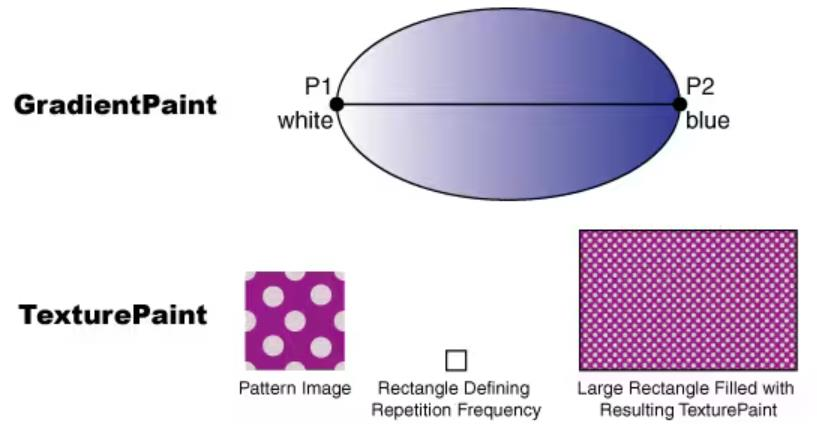
Try it: new Color(r, g, b, alpha)
AddedStrokes (pen styles) 17
Graphics2D
public void setStroke(Stroke s)
Sets type of drawing pen (color, width, style) that will be used by thisGraphics2D.
BasicStroke
A pen stroke for drawing outlines.
public BasicStroke(float width)public BasicStroke(float width, int cap, int join)public BasicStroke(float width, int cap, int join, float miterlimit, float[] dash, float dash_phase)capcan be:CAP_BUTT,CAP_ROUND,CAP_SQUAREjoincan be:JOIN_BEVEL,JOIN_MITER,JOIN_ROUND
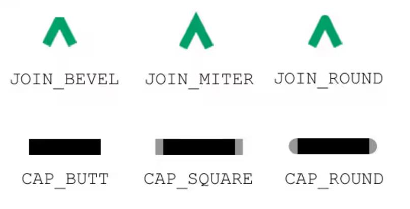
Repainting 18
- Most canvases are drawing the state of fields, a model, etc.
- When the state updates, you must tell the canvas to re-draw itself.
- But you can't call its
paintComponentmethod, because you don't have theGraphics gto pass. - The proper way is to call
repainton the canvas instead:
public void repaint()
Anti-aliasing 19
- Onscreen text and shapes can have jagged edges, or aliases. These can be removed by smoothing, or anti-aliasing, the component.
public void setRenderingHint(key, value)- Example:
g2.setRenderingHint(
RenderingHints.KEY_ANTIALIASING,
RenderingHints.VALUE_ANTIALIAS_ON);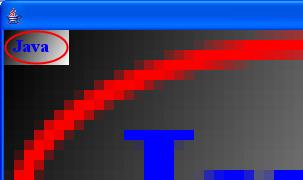
Slides 20–26
Examples 3–8: shapes, text, images, textures
Example 3 20
import java.awt.Graphics;
import java.awt.Graphics2D;
import java.awt.geom.Rectangle2D;
import java.awt.geom.Ellipse2D;
import java.awt.geom.Path2D;
import javax.swing.JPanel;
public class DrawingPanel extends JPanel {
@Override
protected void paintComponent(Graphics g) {
super.paintComponent(g);
Graphics2D g2d = (Graphics2D) g;
// Draw a rectangle
Rectangle2D rect = new Rectangle2D.Double(100, 100, 200, 100);
g2d.draw(rect);
// Draw an oval
Ellipse2D oval = new Ellipse2D.Double(400, 100, 200, 100);
g2d.draw(oval);
// Draw a polygon
Path2D polygon = new Path2D.Double();
polygon.moveTo(200, 300);
polygon.lineTo(300, 400);
polygon.lineTo(100, 400);
polygon.closePath();
g2d.draw(polygon);
}
}Example 4 21
import java.awt.Color;
import java.awt.Font;
import java.awt.Graphics;
import java.awt.Graphics2D;
public class DrawingPanel extends JPanel {
@Override
protected void paintComponent(Graphics g) {
super.paintComponent(g);
Graphics2D g2d = (Graphics2D) g;
// Set font and color
g2d.setFont(new Font("Arial", Font.BOLD, 24));
g2d.setColor(Color.RED);
// Draw a string
g2d.drawString("Hello, Java 2D Graphics!", 200, 50);
}
}Example 5 22
import java.awt.Graphics;
import java.awt.Graphics2D;
import java.awt.Image;
import java.io.File;
import java.io.IOException;
import javax.imageio.ImageIO;
import javax.swing.JPanel;
public class DrawingPanel extends JPanel {
private Image image;
public DrawingPanel() {
try {
image = ImageIO.read(new File("path/to/your/image.jpg"));
} catch (IOException e) {
e.printStackTrace();
}
}
@Override
protected void paintComponent(Graphics g) {
super.paintComponent(g);
Graphics2D g2d = (Graphics2D) g;
// Draw an image
if (image != null) {
g2d.drawImage(image, 300, 200, this);
}
}
}Creating images 23
// import java.awt.image.*;
BufferedImage
A blank graphic image buffer surface onto which you can draw
public BufferedImage(int w, int h, int type)- where
typeis a constant such asBufferedImage.TYPE_INT_ARGB
- where
public Graphics getGraphics()- returns a graphical pen for "drawing on" this image
- you can draw a
BufferedImageonto the screen from within thepaintComponentmethod of your canvas:g.drawImage(BufferedImage, x, y, this);
Example 6 24
import java.awt.Color;
import java.awt.Font;
import java.awt.Graphics;
import java.awt.Graphics2D;
public class DrawingPanel extends JPanel {
@Override
protected void paintComponent(Graphics g) {
super.paintComponent(g);
Graphics2D g2 = (Graphics2D) g;
// Create a buffered image texture patch of size 5x5
BufferedImage bi = new BufferedImage(5, 5,
BufferedImage.TYPE_INT_RGB);
Graphics2D big = bi.createGraphics();
// Render into the BufferedImage graphics to create the texture
big.setColor(Color.green);
big.fillRect(0,0,5,5);
big.setColor(Color.lightGray);
big.fillOval(0,0,5,5);
// Create a texture paint from the buffered image
Rectangle r = new Rectangle(0,0,5,5);
TexturePaint tp = new TexturePaint(bi,r,TexturePaint.NEAREST_NEIGHBOR);
// Add the texture paint to the graphics context.
g2.setPaint(tp);
// Create and render a rectangle filled with the texture.
g2.fillRect(0,0,200,200);
}Example 7 25
import java.awt.Color;
import java.awt.Font;
import java.awt.Graphics;
import java.awt.Graphics2D;
public class DrawingPanel extends JPanel {
@Override
protected void paintComponent(Graphics g) {
super.paintComponent(g);
Graphics2D g2 = (Graphics2D) g;
//Create a BufferedImage object from image file
BufferedImage image = ImageIO.read(new File("java.png"));
//Create image area doubled in width
Rectangle2D.Float imageArea = new Rectangle2D.Float(0, 0, image.getWidth() * 2, image.getHeight());
//Create texture brush from the image
TexturePaint paint = new TexturePaint(image, imageArea);
//Create rectangle
Rectangle2D.Float shape = new Rectangle2D.Float(0, 0, 200, 100);
//Set this texture brush as current paint
g2.setPaint(paint);
//Fill rectangle
g2.fill(shape);Example 8 26
import java.awt.Color;
import java.awt.Font;
import java.awt.Graphics;
import java.awt.Graphics2D;
public class DrawingPanel extends JPanel {
@Override
protected void paintComponent(Graphics g) {
super.paintComponent(g);
Graphics2D g2 = (Graphics2D) g;
GradientPaint gp = new GradientPaint(50.0f, 50.0f, Color.blue
50.0f, 250.0f, Color.green);
g2.setPaint(gp);
g2.fillRect(50, 50, 200, 200); }Slides 27–33
Animation, transforms, shapes, strokes
Moving ball 27–28
import javax.swing.*;
import java.awt.*;
import java.awt.event.ActionEvent;
import java.awt.event.ActionListener;
class MovingBall extends JPanel implements ActionListener {
private int x = 50;
private int dx = 2;
private Timer timer;
public MovingBall() {
timer = new Timer(10, this);
timer.start();
}
@Override
protected void paintComponent(Graphics g) {
super.paintComponent(g);
g.setColor(Color.RED);
g.fillOval(x, 50, 30, 30);
}
@Override
public void actionPerformed(ActionEvent e) {
x += dx;
if (x > getWidth() - 30 || x < 0) dx = -dx;
repaint();
}}
public class AnimationExample {
public static void main(String[] args) {
JFrame frame = new JFrame("Ball Animation");
frame.setSize(400, 200);
frame.setDefaultCloseOperation(JFrame.EXIT_ON_CLOSE);
frame.add(new MovingBall());
frame.setVisible(true);
}
}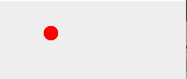
Try it: the Timer animation
AddedTransformations 29–30
import javax.swing.*;
import java.awt.*;
import java.awt.geom.*;
import java.awt.Graphics;
import java.awt.Graphics2D;
public class TransformExample extends JPanel {
@Override
protected void paintComponent(Graphics g) {
super.paintComponent(g);
Graphics2D g2 = (Graphics2D) g;
Rectangle2D rect = new Rectangle2D.Double(50, 50, 100, 50);
g2.setPaint(Color.GRAY);
g2.draw(rect);
g2.translate(150, 0);
g2.setPaint(Color.BLUE);
g2.draw(rect);
g2.rotate(Math.toRadians(45), 100, 75);
g2.setPaint(Color.RED);
g2.draw(rect);
g2.scale(1.5, 1.5);
g2.setPaint(Color.GREEN);
g2.draw(rect); }
public static void main(String[] args) {
JFrame frame = new JFrame("Transformations");
frame.setSize(400, 250);
frame.setDefaultCloseOperation(JFrame.EXIT_ON_CLOSE);
frame.add(new TransformExample());
frame.setVisible(true);
}
}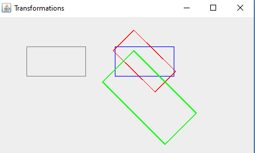
Drawing Shapes 31
import javax.swing.*;import java.awt.*;
class ShapePanel extends JPanel {
@Override
protected void paintComponent(Graphics g) {
super.paintComponent(g);
g.drawLine(50, 50, 200, 50);
g.drawRect(50, 70, 100, 50);
g.fillRect(160, 70, 100, 50);
g.drawOval(50, 130, 100, 50);
g.fillOval(160, 130, 100, 50);
g.drawArc(50, 190, 100, 100, 0, 180);
int[] xPoints = {50, 100, 150};
int[] yPoints = {300, 200, 300};
g.fillPolygon(xPoints, yPoints, 3);
}}
public class ShapeExample {
public static void main(String[] args) {
JFrame frame = new JFrame("Drawing Shapes");
frame.setSize(400, 400);
frame.setDefaultCloseOperation(JFrame.EXIT_ON_CLOSE);
frame.add(new ShapePanel());
frame.setVisible(true);
}
}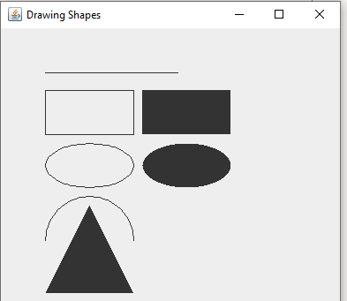
drawArc(…, 0, 180) draws the top half of a circle: angles start at 3 o'clock and go anticlockwise.Stroke & Paint 32–33
import javax.swing.*;
import java.awt.*;
import java.awt.geom.*;
import java.awt.Graphics;
import java.awt.Graphics2D;
public class StrokePaintExample extends JPanel {
@Override
protected void paintComponent(Graphics g) {
super.paintComponent(g);
Graphics2D g2 = (Graphics2D) g;
Stroke dashed = new BasicStroke(3, BasicStroke.CAP_BUTT,
BasicStroke.JOIN_BEVEL, 0, new float[]{9}, 0);
g2.setStroke(dashed);
g2.setPaint(Color.MAGENTA);
g2.draw(new Rectangle2D.Double(40, 40, 150, 100));
GradientPaint gradient = new GradientPaint(250, 40, Color.RED, 400, 140,
Color.YELLOW);
g2.setPaint(gradient);
g2.fill(new Ellipse2D.Double(250, 40, 150, 100));
}
public static void main(String[] args) {
JFrame frame = new JFrame("Stroke & Paint");
frame.setSize(450, 200);
frame.setDefaultCloseOperation(JFrame.EXIT_ON_CLOSE);
frame.add(new StrokePaintExample());
frame.setVisible(true);
}
}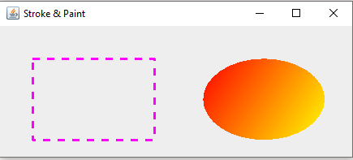
new float[]{9} is the dash pattern: 9 px drawn, 9 px gap.CS254 Visual Programming Lab · November 2025 · Alshihan, Dima
Lab 6: Mouse Events & Graphics
Mouse Events
A Mouse Event occurs when the user interacts with a component using the mouse (clicking, moving, dragging).
- Class: MouseEvent → The object contains information about the mouse action that triggered the listener.
Useful MouseEvent Methods
int getX(),int getY()→ Returns the x- and y-coordinates of the event (in pixels) relative to the component.Point getPoint()→ Returns the event location as a Point object.isLeftMouseButton(),isMiddleMouseButton(),isRightMouseButton()→ Indicates the mouse button used.int getClickCount()→ Returns how many times the mouse was clicked (single-click, double-click, etc.).
Mouse Listeners
- A mouse listener is attached to a component to detect and respond to user mouse actions.
- It performs actions when the user clicks, moves, drags, or scrolls the mouse over the component.
- Mouse Listener Interfaces in AWT:
- MouseListener: mouseClicked, mouseEntered, mouseExited, mousePressed, mouseReleased
- MouseMotionListener: mouseMoved, mouseDragged
- MouseWheelListener: Handles mouse wheel scrolling events.
Graphics in Java Swing
A JPanel is commonly used for drawing graphics.
- To create custom drawings, define a class that extends JPanel and override the paintComponent() method.
- Coordinate System:
- The origin (0, 0) is located at the top-left corner of the panel.
- The x-axis increases to the right.
- The y-axis increases downward.
- Common Graphics Drawing Methods
These methods belong to the Graphics class and allow you to draw basic shapes:drawLine(int xstart, int ystart, int xend, int yend)drawRect(int xleft, int ytop, int width, int height)drawString(String text, int xleft, int ybottom)fillRect(int xleft, int ytop, int width, int height)fillOval(int xleft, int ytop, int width, int height)setColor(Color col)
- Graphics2D is a more powerful subclass of Graphics. It provides advanced drawing features such as transformations, strokes, and rendering hints.
- Drawing with Shape Classes: Using Graphics2D, you can draw shapes from the java.awt.geom package, such as: Arc2D, Ellipse2D, Line2D, Rectangle2D, RoundRectangle2D, ..
Task
Create a basic Tic-Tac-Toe game in Java using Swing.
- The game board is a 3×3 grid, drawn using rectangles.
- The user plays 'X', and the computer plays 'O'.
- The player always starts.
- When the player clicks a cell:
- Draw X immediately in that cell.
- Then the computer chooses a random empty cell and draws O.
- The game ends when:
- A player gets three in a row (horizontal, vertical, or diagonal), or
- The board becomes full (draw).
- Include a Reset button to restart the game at any time.
- Use the following Swing/AWT components and classes in your implementation:
- JPanel, Graphics2D, MouseListener,
- Drawing methods like drawLine, drawRect, drawOval, etc.
- repaint () for updating the board.
The expected design of the application
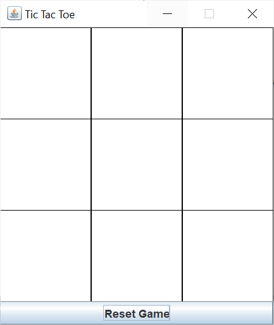
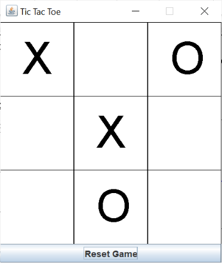
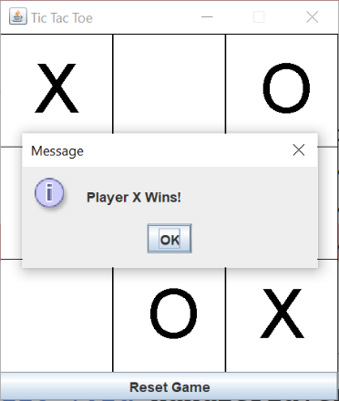
Try it: play the Lab 6 game
AddedYour move: click a cell.
Your answer · lab6.zip
Your Lab 6 answer
Project Lab6 holds four separate programs. Each has its own main, so run each one with right-click → Run File (Shift+F6). F6 runs the project's main class, com.mycompany.lab6.Lab6 (the ball). The code is exactly as in your zip.
| Program | Files | Run |
|---|---|---|
| Tic-Tac-Toe (the lab task) | TicTacToe.java (no package line: it sits directly in src/main/java) | Run File on TicTacToe.java |
| Bouncing ball | Lab6.java + Moveclass.java | F6, or Run File on Lab6.java |
| Shapes | Simpleshape.java + Shape.java | Run File on Simpleshape.java |
| Hexagon | Sixsides.java + hexagon.java | Run File on Sixsides.java |
1. Tic-Tac-Toe
import javax.swing.*;
import java.awt.*;
import java.awt.event.*;
import java.util.ArrayList;
import java.util.Random;
public class TicTacToe {
public static void main(String[] args) {
SwingUtilities.invokeLater(() -> new GameFrame());
}
}
class GameFrame extends JFrame {
public GameFrame() {
setTitle("Tic-Tac-Toe");
setDefaultCloseOperation(JFrame.EXIT_ON_CLOSE);
GamePanel panel = new GamePanel();
JButton resetButton = new JButton("Reset");
resetButton.addActionListener(e -> panel.resetGame());
add(panel, BorderLayout.CENTER);
add(resetButton, BorderLayout.SOUTH);
pack();
setLocationRelativeTo(null);
setVisible(true);
}
}
class GamePanel extends JPanel implements MouseListener {
private char[][] board = new char[3][3]; // 'X', 'O', or '\0'
private boolean playerTurn = true;
private boolean gameOver = false;
private final int CELL_SIZE = 120;
private final Random rand = new Random();
public GamePanel() {
setPreferredSize(new Dimension(3 * CELL_SIZE, 3 * CELL_SIZE));
addMouseListener(this);
resetGame();
}
public void resetGame() {
for (int r = 0; r < 3; r++)
for (int c = 0; c < 3; c++)
board[r][c] = '\0';
playerTurn = true;
gameOver = false;
repaint();
}
@Override
protected void paintComponent(Graphics g) {
super.paintComponent(g);
Graphics2D g2d = (Graphics2D) g;
// Draw grid
g2d.setStroke(new BasicStroke(3));
for (int i = 1; i < 3; i++) {
g2d.drawLine(i * CELL_SIZE, 0, i * CELL_SIZE, 3 * CELL_SIZE);
g2d.drawLine(0, i * CELL_SIZE, 3 * CELL_SIZE, i * CELL_SIZE);
}
// Draw X and O
for (int r = 0; r < 3; r++) {
for (int c = 0; c < 3; c++) {
int x = c * CELL_SIZE;
int y = r * CELL_SIZE;
if (board[r][c] == 'X') {
g2d.drawLine(x + 20, y + 20, x + CELL_SIZE - 20, y + CELL_SIZE - 20);
g2d.drawLine(x + CELL_SIZE - 20, y + 20, x + 20, y + CELL_SIZE - 20);
} else if (board[r][c] == 'O') {
g2d.drawOval(x + 20, y + 20, CELL_SIZE - 40, CELL_SIZE - 40);
}
}
}
// Display game status
g2d.setColor(Color.RED);
g2d.setFont(new Font("Arial", Font.BOLD, 24));
if (gameOver) {
String msg = getWinner() == 'X' ? "Player Wins!"
: getWinner() == 'O' ? "Computer Wins!"
: "Draw!";
g2d.drawString(msg, 10, getHeight() - 10);
}
}
@Override
public void mouseClicked(MouseEvent e) {
if (gameOver || !playerTurn) return;
int row = e.getY() / CELL_SIZE;
int col = e.getX() / CELL_SIZE;
if (row < 0 || col < 0 || row > 2 || col > 2) return;
if (board[row][col] == '\0') {
board[row][col] = 'X';
repaint();
if (checkGameOver()) return;
playerTurn = false;
computerMove();
}
}
private void computerMove() {
if (gameOver) return;
// Choose random empty cell
ArrayList<int[]> emptyCells = new ArrayList<>();
for (int r = 0; r < 3; r++)
for (int c = 0; c < 3; c++)
if (board[r][c] == '\0')
emptyCells.add(new int[]{r, c});
if (emptyCells.isEmpty()) return;
int[] choice = emptyCells.get(rand.nextInt(emptyCells.size()));
board[choice[0]][choice[1]] = 'O';
repaint();
if (checkGameOver()) return;
playerTurn = true;
}
private boolean checkGameOver() {
if (getWinner() != '\0' || isBoardFull()) {
gameOver = true;
repaint();
return true;
}
return false;
}
private char getWinner() {
// Rows, columns, diagonals
for (int i = 0; i < 3; i++) {
if (board[i][0] != '\0' &&
board[i][0] == board[i][1] &&
board[i][1] == board[i][2])
return board[i][0];
if (board[0][i] != '\0' &&
board[0][i] == board[1][i] &&
board[1][i] == board[2][i])
return board[0][i];
}
if (board[0][0] != '\0' &&
board[0][0] == board[1][1] &&
board[1][1] == board[2][2])
return board[0][0];
if (board[0][2] != '\0' &&
board[0][2] == board[1][1] &&
board[1][1] == board[2][0])
return board[0][2];
return '\0'; // No winner
}
private boolean isBoardFull() {
for (int r = 0; r < 3; r++)
for (int c = 0; c < 3; c++)
if (board[r][c] == '\0')
return false;
return true;
}
// Unused MouseListener methods
public void mousePressed(MouseEvent e) {}
public void mouseReleased(MouseEvent e) {}
public void mouseEntered(MouseEvent e) {}
public void mouseExited(MouseEvent e) {}
}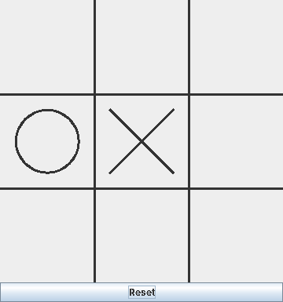
public static void main(String[] args) { SwingUtilities.invokeLater(() -> new GameFrame()); }- Builds the window on Swing's event thread (Lecture 14 explains why).
() -> new GameFrame()is a lambda: a short way to write aRunnablewhoserun()does that one thing. class GameFrame extends JFrame {- A second class in the same file. That's allowed as long as only one class is
publicand that one is named like the file. setTitle("Tic-Tac-Toe"); setDefaultCloseOperation(JFrame.EXIT_ON_CLOSE); GamePanel panel = new GamePanel(); JButton resetButton = new JButton("Reset"); resetButton.addActionListener(e -> panel.resetGame());- Title, close behaviour, the board panel and the Reset button. The listener is a lambda too: on click it calls
panel.resetGame(). add(panel, BorderLayout.CENTER); add(resetButton, BorderLayout.SOUTH); pack(); setLocationRelativeTo(null); setVisible(true);
- Board in the middle, button at the bottom.
pack()sizes the window to fit what's inside (the 360 × 360 board plus the button) instead of a fixedsetSize.setLocationRelativeTo(null)centres it on the screen. class GamePanel extends JPanel implements MouseListener {- The board is a
JPanelthat draws itself and is also its own mouse listener. private char[][] board = new char[3][3]; // 'X', 'O', or '\0' private boolean playerTurn = true; private boolean gameOver = false; private final int CELL_SIZE = 120; private final Random rand = new Random();
- The game's data (the model): a 3 × 3 array of
char.'\0', the "null character", means an empty cell. Two flags track whose turn it is and whether the game has ended.finalmakesCELL_SIZEa constant (each cell is 120 pixels).Randompicks the computer's moves. public GamePanel() { setPreferredSize(new Dimension(3 * CELL_SIZE, 3 * CELL_SIZE)); addMouseListener(this); resetGame(); }- Asks for a 360 × 360 panel (which
pack()uses), registers the panel itself as the mouse listener, and starts with an empty board. public void resetGame() { for (int r = 0; r < 3; r++) for (int c = 0; c < 3; c++) board[r][c] = '\0'; playerTurn = true; gameOver = false; repaint(); }- Two nested loops visit all 9 cells and empty them, then the flags are reset.
repaint()asks Swing to callpaintComponentagain so the screen matches the data. protected void paintComponent(Graphics g) { super.paintComponent(g); Graphics2D g2d = (Graphics2D) g; g2d.setStroke(new BasicStroke(3));super.paintComponent(g)clears the panel first. The cast gives the extra Graphics2D methods;setStroke(new BasicStroke(3))makes lines 3 pixels thick.for (int i = 1; i < 3; i++) { g2d.drawLine(i * CELL_SIZE, 0, i * CELL_SIZE, 3 * CELL_SIZE); g2d.drawLine(0, i * CELL_SIZE, 3 * CELL_SIZE, i * CELL_SIZE); }- The grid: for i = 1 and 2, one vertical and one horizontal line at 120 and 240 pixels.
if (board[r][c] == 'X') { g2d.drawLine(x + 20, y + 20, x + CELL_SIZE - 20, y + CELL_SIZE - 20); g2d.drawLine(x + CELL_SIZE - 20, y + 20, x + 20, y + CELL_SIZE - 20); } else if (board[r][c] == 'O') { g2d.drawOval(x + 20, y + 20, CELL_SIZE - 40, CELL_SIZE - 40); }- For every cell,
xandyare its top-left corner. An X is two diagonal lines and an O is a circle, both kept 20 pixels away from the cell's edges. if (gameOver) { String msg = getWinner() == 'X' ? "Player Wins!" : getWinner() == 'O' ? "Computer Wins!" : "Draw!"; g2d.drawString(msg, 10, getHeight() - 10); }- When the game is over, a nested ternary picks the message, which is drawn in red, bold 24-point Arial near the bottom-left corner.
int row = e.getY() / CELL_SIZE; int col = e.getX() / CELL_SIZE;
- Inside
mouseClicked: turns the click position into a cell. Integer division drops the remainder, so y = 250 gives row 2. The method first ignores the click if the game is over or it isn't the player's turn, and then checks that the row and column are 0 to 2. if (board[row][col] == '\0') { board[row][col] = 'X'; repaint(); if (checkGameOver()) return; playerTurn = false; computerMove(); }- Only an empty cell can be taken. X goes in, the board is redrawn, and if that move didn't end the game the computer plays.
ArrayList<int[]> emptyCells = new ArrayList<>(); ... int[] choice = emptyCells.get(rand.nextInt(emptyCells.size())); board[choice[0]][choice[1]] = 'O';
computerMovecollects every empty cell as a small array{row, col}, picks one at random withrand.nextInt(size), and puts an O there. Then it checks for the end of the game and gives the turn back.private boolean checkGameOver() { if (getWinner() != '\0' || isBoardFull()) {- The game ends when someone has three in a row or the board is full.
private char getWinner() { ... }- One loop checks row
iand columnifor three equal, non-empty cells; then the two diagonals are checked. It returns'X','O', or'\0'for no winner. public void mousePressed(MouseEvent e) {} public void mouseReleased(MouseEvent e) {} public void mouseEntered(MouseEvent e) {} public void mouseExited(MouseEvent e) {}- Implementing an interface means writing all its methods, so the four unused ones are left empty. Extending
MouseAdapterinstead would avoid them.
2. Bouncing ball
package com.mycompany.lab6;
import java.awt.*;
import javax.swing.*;
import java.awt.event.*;
import java.util.*;
public class Lab6 {
public static void main(String[] args) {
JFrame frame = new JFrame("Ball Animation");
frame.setSize(400, 200);
frame.setDefaultCloseOperation(JFrame.EXIT_ON_CLOSE);
frame.add(new Moveclass());
frame.setVisible(true);
}
}
package com.mycompany.lab6;
import javax.swing.*;
import java.awt.*;
import java.awt.event.ActionEvent;
import java.awt.event.ActionListener;
public class Moveclass extends JPanel implements ActionListener {
private int x=50;
private int y=10;
private Timer timer;
Moveclass(){
timer=new Timer(1000,this);
timer.start();
}
@Override
protected void paintComponent(Graphics g) {
super.paintComponent(g);
g.setColor(Color.RED);
g.fillOval(50, x, 30, 30);
}
@Override
public void actionPerformed(ActionEvent e) {
x += y;
if (x > getHeight()- 30 || x < 0) y = -y;
repaint();
}
}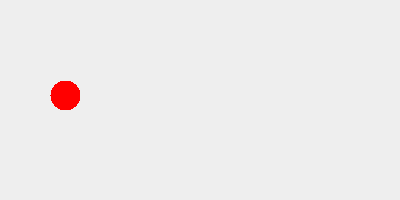
JFrame frame = new JFrame("Ball Animation"); frame.setSize(400, 200); ... frame.add(new Moveclass());Lab6's main: a 400 × 200 window that holds oneMoveclasspanel. (import java.util.*;isn't used.)public class Moveclass extends JPanel implements ActionListener { private int x=50; private int y=10; private Timer timer;- A panel that is also an ActionListener, so a Timer can call it. Despite the names,
xis the ball's vertical position andyis how far it moves each step. Moveclass(){ timer=new Timer(1000,this); timer.start(); }- A
javax.swing.TimercallsactionPerformedevery 1000 ms (once a second), on Swing's event thread.thisis the listener. g.setColor(Color.RED); g.fillOval(50, x, 30, 30);
- A red ball 30 pixels wide. The left edge stays at 50 and the top edge is
x, so the ball moves up and down. x += y; if (x > getHeight()- 30 || x < 0) y = -y; repaint();
- Each tick moves the ball 10 pixels. When it passes the bottom (panel height minus the ball's size) or the top, the step changes sign and the ball bounces.
repaint()redraws it. With one tick per second the ball jumps rather than glides;new Timer(20, this)makes it smooth.
3. Shapes
/*
* Click nbfs://nbhost/SystemFileSystem/Templates/Licenses/license-default.txt to change this license
* Click nbfs://nbhost/SystemFileSystem/Templates/Classes/Main.java to edit this template
*/
package com.mycompany.lab6;
import javax.swing.*;
/**
*
* @author Student
*/
public class Simpleshape {
public static void main(String[] args) {
JFrame frame=new JFrame("Shapes");
frame.setDefaultCloseOperation(JFrame.EXIT_ON_CLOSE);
Shape panel=new Shape();
frame.add(panel);
frame.setSize(500,500);
frame.setVisible(true);
}
}
package com.mycompany.lab6;
import javax.swing.*;
import java.awt.*;
import java.awt.geom.Ellipse2D;
import java.awt.geom.Line2D;
import java.awt.geom.Path2D;
import java.awt.geom.*;
public class Shape extends JPanel {
@Override
protected void paintComponent(Graphics g) {
super.paintComponent(g);
Graphics2D g2d = (Graphics2D) g;
Rectangle2D rect= new Rectangle2D.Double(50,50,100,100);
g2d.draw(rect);
Ellipse2D oval = new Ellipse2D.Double(100, 100, 100, 100);
g2d.draw(oval);
Line2D line=new Line2D.Double(1, 1, 50, 50);
g2d.draw(line);
RoundRectangle2D round=new RoundRectangle2D.Double(200, 200, 200, 100, 50 , 50);
g2d.draw(round);
Arc2D arc3=new Arc2D.Double(200, 50, 100, 100, 90, 270, Arc2D.PIE);
g2d.draw(arc3);
g2d.drawPolygon(new int[] {10, 20, 30}, new int[] {100, 20, 100}, 3);
}
}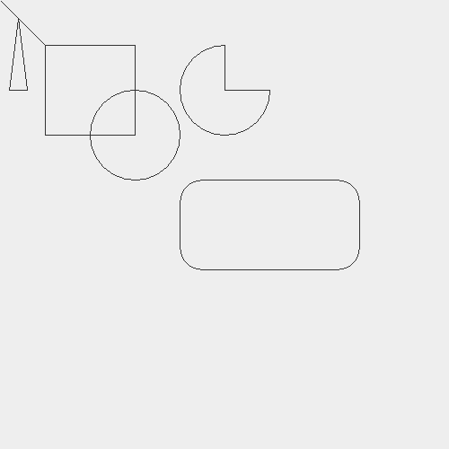
JFrame frame=new JFrame("Shapes"); ... Shape panel=new Shape(); frame.add(panel); frame.setSize(500,500);Simpleshape's main: a 500 × 500 window showing oneShapepanel.public class Shape extends JPanel {- Note that
java.awtalso has aShape(an interface). Inside this package the name means your class, because a class in the same package wins over a.*import, so it compiles. A name likeShapesPanelavoids the confusion. Rectangle2D rect= new Rectangle2D.Double(50,50,100,100); g2d.draw(rect);
- Graphics2D shape objects from
java.awt.geom: create the shape, theng2d.draw(...)its outline. This is a 100 × 100 square with its corner at (50, 50). Ellipse2D oval = new Ellipse2D.Double(100, 100, 100, 100);
- A circle inside the 100 × 100 box at (100, 100), overlapping the square.
Line2D line=new Line2D.Double(1, 1, 50, 50);
- A line from (1, 1) to (50, 50).
RoundRectangle2D round=new RoundRectangle2D.Double(200, 200, 200, 100, 50 , 50);
- A 200 × 100 rectangle with rounded corners; the last two numbers are the width and height of the corner curves.
Arc2D arc3=new Arc2D.Double(200, 50, 100, 100, 90, 270, Arc2D.PIE);
- Part of a circle: start at 90° (straight up), sweep 270° anticlockwise.
Arc2D.PIEjoins the ends to the centre, giving a pie with a quarter missing. g2d.drawPolygon(new int[] {10, 20, 30}, new int[] {100, 20, 100}, 3);- A polygon from an array of x values and an array of y values: points (10, 100), (20, 20), (30, 100), a tall thin triangle.
4. Hexagon
package com.mycompany.lab6;
import javax.swing.JFrame;
public class Sixsides {
public static void main(String[] args) {
JFrame frame=new JFrame("Shapes");
frame.setDefaultCloseOperation(JFrame.EXIT_ON_CLOSE);
hexagon panel=new hexagon();
frame.add(panel);
frame.setSize(500,500);
frame.setVisible(true);
}
}/*
* Click nbfs://nbhost/SystemFileSystem/Templates/Licenses/license-default.txt to change this license
* Click nbfs://nbhost/SystemFileSystem/Templates/Classes/Class.java to edit this template
*/
package com.mycompany.lab6;
import java.awt.Graphics;
import java.awt.Graphics2D;
import java.awt.geom.Line2D;
import javax.swing.*;
import java.awt.*;
import java.awt.geom.Line2D;
/**
*
* @author Student
*/
public class hexagon extends JPanel {
@Override
protected void paintComponent(Graphics g) {
super.paintComponent(g);
Graphics2D g2d=(Graphics2D)g;
Line2D line1=new Line2D.Double(300, 300, 350,300);
Line2D line2=new Line2D.Double(350, 300, 400, 350);
Line2D line3=new Line2D.Double(400, 350, 350, 400);
Line2D line4=new Line2D.Double(350, 400, 300, 400);
Line2D line5=new Line2D.Double(300, 400, 250, 350);
Line2D line6=new Line2D.Double(250, 350, 300, 300);
g2d.draw(line1);
g2d.draw(line2);
g2d.draw(line3);
g2d.draw(line4);
g2d.draw(line5);
g2d.draw(line6);
}}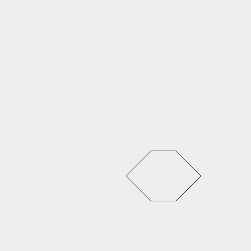
hexagon panel=new hexagon(); frame.add(panel);
Sixsides's main is the same as Simpleshape's, but shows ahexagonpanel. Java's convention is a capital first letter for class names (Hexagon), but lowercase works.Line2D line1=new Line2D.Double(300, 300, 350,300); ... Line2D line6=new Line2D.Double(250, 350, 300, 300);
- Six lines, each starting where the previous one ends: (300,300) → (350,300) → (400,350) → (350,400) → (300,400) → (250,350) → back to (300,300). That closes the hexagon.
g2d.drawPolygonwith six points would draw the same shape in one call.
Added · Full solution
Show TicTacToe.java
import javax.swing.*;
import java.awt.*;
import java.awt.event.*;
import java.util.ArrayList;
import java.util.Random;
public class TicTacToe extends JFrame {
private final BoardPanel board = new BoardPanel();
public TicTacToe() {
super("Tic Tac Toe");
setLayout(new BorderLayout());
add(board, BorderLayout.CENTER);
JButton reset = new JButton("Reset Game");
reset.addActionListener(e -> board.reset());
add(reset, BorderLayout.SOUTH);
setSize(320, 370);
setDefaultCloseOperation(JFrame.EXIT_ON_CLOSE);
setLocationRelativeTo(null);
setVisible(true);
}
// ---------- the board: model + drawing + mouse ----------
private class BoardPanel extends JPanel implements MouseListener {
private char[][] cells = new char[3][3]; // ' ', 'X' or 'O'
private boolean gameOver = false;
private final Random random = new Random();
BoardPanel() {
setBackground(Color.WHITE);
addMouseListener(this);
reset();
}
void reset() {
for (int r = 0; r < 3; r++)
for (int c = 0; c < 3; c++)
cells[r][c] = ' ';
gameOver = false;
repaint();
}
@Override
protected void paintComponent(Graphics g) {
super.paintComponent(g);
Graphics2D g2 = (Graphics2D) g;
g2.setRenderingHint(RenderingHints.KEY_ANTIALIASING,
RenderingHints.VALUE_ANTIALIAS_ON);
int cw = getWidth() / 3, ch = getHeight() / 3;
g2.setColor(Color.BLACK);
for (int r = 0; r < 3; r++)
for (int c = 0; c < 3; c++)
g2.drawRect(c * cw, r * ch, cw, ch); // the grid
g2.setStroke(new BasicStroke(4));
for (int r = 0; r < 3; r++) {
for (int c = 0; c < 3; c++) {
int x = c * cw + cw / 4, y = r * ch + ch / 4;
int w = cw / 2, h = ch / 2;
if (cells[r][c] == 'X') {
g2.drawLine(x, y, x + w, y + h);
g2.drawLine(x + w, y, x, y + h);
} else if (cells[r][c] == 'O') {
g2.drawOval(x, y, w, h);
}
}
}
}
@Override
public void mouseClicked(MouseEvent e) {
if (gameOver) return;
int col = e.getX() / (getWidth() / 3);
int row = e.getY() / (getHeight() / 3);
if (row > 2 || col > 2 || cells[row][col] != ' ') return; // taken
cells[row][col] = 'X'; // player
repaint();
if (finished('X')) return;
computerMove(); // computer
repaint();
finished('O');
}
private void computerMove() {
ArrayList<Point> empty = new ArrayList<>();
for (int r = 0; r < 3; r++)
for (int c = 0; c < 3; c++)
if (cells[r][c] == ' ') empty.add(new Point(c, r));
Point p = empty.get(random.nextInt(empty.size()));
cells[p.y][p.x] = 'O';
}
// true if the game ended (win or draw); shows the message
private boolean finished(char who) {
if (wins(who)) {
gameOver = true;
paintImmediately(0, 0, getWidth(), getHeight());
JOptionPane.showMessageDialog(this, "Player " + who + " Wins!");
return true;
}
if (isFull()) {
gameOver = true;
paintImmediately(0, 0, getWidth(), getHeight());
JOptionPane.showMessageDialog(this, "It's a draw!");
return true;
}
return false;
}
private boolean wins(char p) {
for (int i = 0; i < 3; i++) {
if (cells[i][0] == p && cells[i][1] == p && cells[i][2] == p) return true; // row
if (cells[0][i] == p && cells[1][i] == p && cells[2][i] == p) return true; // column
}
return (cells[0][0] == p && cells[1][1] == p && cells[2][2] == p) // diagonals
|| (cells[0][2] == p && cells[1][1] == p && cells[2][0] == p);
}
private boolean isFull() {
for (char[] row : cells)
for (char c : row)
if (c == ' ') return false;
return true;
}
public void mousePressed(MouseEvent e) {}
public void mouseReleased(MouseEvent e) {}
public void mouseEntered(MouseEvent e) {}
public void mouseExited(MouseEvent e) {}
}
public static void main(String[] args) {
new TicTacToe();
}
}- Model vs view:
cellsholds the game;paintComponentonly draws it (MVC from Lecture 8). - Click → cell: integer division
e.getX() / (getWidth() / 3)gives 0, 1 or 2. paintImmediatelydraws the final move before the dialog opens; a plainrepaint()would only draw after the dialog closes.- The X's and O's are drawn with
drawLineanddrawOval, and the grid withdrawRect, as the task asks.
All of Lecture 7 + Lab 6
Flashcards
Tap the card to flip it. Each answer names the slide it comes from.